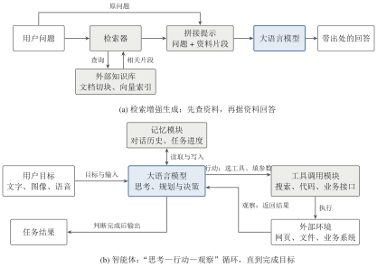

1.4 当前技术版图
训练好的模型有三个先天限制：知识停留在训练截止日，复杂问题容易一步答错，自己不能对外界采取任何行动。今天的大语言模型系统靠什么突破这些限制？本节按“在模型之外加什么”梳理当前的主要技术：改写输入的提示工程与思维链、补充外部知识的检索增强生成、赋予行动能力的智能体，再看多模态、效率与开放权重方面的进展，最后给出截至 2026 年 11 月的主要模型版图。结论是：能力的提升越来越多地来自“模型 + 系统”的组合，而不仅是模型本身变大。
1.4.1 提示工程、思维链与 ReAct
使用大语言模型的人很快会发现：同一个问题换一种问法，回答的质量可能差别很大。这种现象称为提示敏感性。原因在第 1.2 节已经说明：模型的输出是以全部输入为条件的概率分布，输入中多一句说明、换一个示例，条件就变了。提示工程（prompt engineering）就是有意识地设计输入，在模型输入中写清角色、任务、背景材料、约束、输出格式，必要时附上几个示例（即上下文学习中的“少样本”示例），引导模型给出所需的回答。
思维链（Chain of Thought，CoT）提示是一种针对推理错误的提示技术：在示例中写出逐步推理的过程，或直接要求模型“一步一步地想”，模型就会先生成中间步骤再给出答案。由于每个新词元都以前面已生成的词元为条件，先写出的中间结果为后面的计算提供了“草稿纸”，算术、常识和符号推理题的正确率因此明显提高[23]。第 1.3.6 小节的推理模型，可以看作把思维链从“靠提示引出”变成了“经训练养成”。
ReAct（Reasoning and Acting，推理—行动交替）进一步让模型交替生成两种内容：一段“思考”（分析现在该做什么）和一个“行动”（如“搜索：某公司 2025 年营收”）；系统执行这个行动，把结果作为“观察”写回上下文，模型再接着思考下一步[24]。最初的 ReAct 只用少量示例来教会模型这种格式，就使模型能够与外部环境交互，这一循环后来成为智能体的基本工作方式（第 1.4.3 小节）。
辨析
模型写出的“推理过程”是生成的文本，不一定忠实反映模型内部实际的计算；看似严密的步骤也可能建立在错误前提上。提示能激发模型已有的能力，却不能补上模型没学过的知识，也不能代替对结果的核验。高风险场景应核对最终结论和关键中间量，而不是只看推理写得是否流畅。
1.4.2 检索增强生成
参数化知识有截止时间，也不包含企业内部资料。检索增强生成（Retrieval-Augmented Generation，RAG）的思路是：回答之前，先从外部知识库中检索与问题相关的资料，把资料和问题一起放进提示，让模型依据这些资料作答[25]。其流程如图 1-8(a) 所示：文档事先被切成小块并建立索引；用户提问后，检索器找出最相关的若干片段；系统把“问题 + 片段”拼成提示交给模型；模型生成回答，并可以标出依据的是哪一段资料。
RAG 带来三点好处：知识更新只需更新知识库，无须重新训练模型；回答可以附上出处，便于核查；企业的私有资料可以不进入模型训练。但它不会自动正确：检索可能漏掉关键资料，切块可能切断上下文，模型也可能误读或忽略检索到的证据。因此评估 RAG 系统要分两头看：“检索到的是不是正确的证据”和“回答是否忠实于证据”。RAG 的完整流程、改进方法和评估见第 5 章。
辨析
“知识库不进入模型训练”不等于“数据不会泄露”。RAG 系统中，文档要经过切块、向量化、存储和检索，检索到的片段会随提示发给模型服务方，日志中也可能留存。若模型调用的是第三方服务，或知识库没有做好按用户权限过滤，私有数据照样可能暴露给不该看到的人。保护私有数据要靠访问控制、权限过滤、日志与数据保留策略，而不是只靠“不训练”。
从更宏观的角度看，RAG 把一部分知识从神经网络的参数中搬到了显式的、可逐条查看和修改的文档库中。有学者据此认为，可靠的智能系统既需要神经网络的统计学习，也需要显式的符号化知识表示；这与辛顿（Geoffrey Hinton）等人长期主张的“神经网络本身足以学会一切表示”的观点并不完全一致。这一争论尚无定论，但在工程上，二者结合已是常态。
表 1-5 对比了提示工程、RAG 和微调这三种最常用的“让模型适应具体任务”的手段。
表 1-5 提示工程、检索增强生成与微调的对比
| 对比项 | 提示工程 | 检索增强生成 | 微调 |
|---|---|---|---|
| 改变了什么 | 只改输入 | 输入中加入检索到的资料 | 改变模型参数 |
| 解决什么问题 | 说清任务、格式与约束 | 补充最新知识与私有知识，给出出处 | 学会特定风格、格式或领域技能 |
| 更新成本 | 最低，改提示即可 | 低，更新知识库即可 | 高，需要数据和训练算力 |
| 主要局限 | 补不上模型没有的知识 | 依赖检索质量；占用上下文窗口 | 新知识难以可靠注入；可能损害原有能力 |
| 本书展开处 | 第 3、7 章 | 第 5 章 | 第 3 章 |

图 1-8 两种扩展大语言模型能力的方式。(a) 检索增强生成在生成前把外部资料放进上下文；(b) 智能体让模型反复选择并调用工具、观察结果、更新记忆，直到完成用户目标。深色强调框均为同一个大语言模型
1.4.3 智能体
大语言模型本身只能输出词元。要让它真正“做事”——查资料、写文件、改代码、订会议——就需要智能体（agent）。在人工智能中，智能体泛指能够感知环境、自主做出决策并执行动作以实现特定目标的程序或系统，通常要求具备自主性（无须人逐步指挥）、反应性（对环境变化及时响应）、主动性（为目标主动采取行动）和社会性（与人或其他智能体交流协作）[26]。以大语言模型为核心的智能体，由模型充当“大脑”，负责理解目标、制定计划和选择行动，再由外围系统提供工具、记忆和执行环境。
一个典型的智能体包含三个核心模块（图 1-8(b)）：
思考（规划）模块：由大语言模型承担，分析目标、分解任务、决定下一步做什么；
记忆模块：保存对话历史、任务进度和过去的经验，需要时取回放进上下文；
工具调用模块：把模型输出的结构化请求（调用哪个工具、参数是什么）交给搜索引擎、代码解释器、数据库或业务系统执行，并把结果返回给模型。
它的工作流程是：若输入包含语音、图像等，先借助多模态能力把它们转换成模型能处理的形式；再由模型结合记忆进行推理和规划；然后通过工具调用模块执行动作，观察结果，再决定下一步，循环往复，直到目标完成。这正是第 1.4.1 小节 ReAct 的“思考—行动—观察”循环。
近两年，智能体的能力主要在以下几方面扩展：随着视觉语言模型的成熟，智能体可以“看懂”屏幕和图片，直接操作图形界面；借助少样本示例和上下文学习，它能在没有大量标注数据的情况下快速适应新任务；通过标准化的工具接口，能调用的外部系统越来越多；具备记忆与反思能力后，能从失败中总结经验；一些面向陪伴、客服场景的智能体还模拟个性、情感和社交互动。为了让模型方便地接入各类工具与数据源，业界出现了 MCP（Model Context Protocol，模型上下文协议）等开放协议，其细节见第 7 章。
智能体的行动能力来自模型与外部系统的组合。一旦工具能写文件、付款、发消息或控制设备，模型的错误就从“一段错误的文字”变成“一次错误的操作”。长任务中还会出现错误累积、偏离目标和反复调用同一工具的循环。因此需要最小权限、参数校验、敏感操作人工确认、沙箱执行和完整审计（第 1.6.4 小节）。智能体的组件与闭环见第 6 章，编程智能体的工程方法见第 7 章，记忆系统见第 8 章。
1.4.4 多模态与世界模型
多模态模型正从“看懂一张图”扩展到实时语音对话、长视频理解、屏幕操作和三维空间理解。用户可以拍一张题目让模型讲解，上传一份带图表的报告让它分析，或让它看着屏幕一步步完成软件操作。斯坦福大学《2026 年人工智能指数报告》指出，在计算机操作基准 OSWorld 上，智能体的任务成功率在一年内从约 12% 提高到约 66%，但仍低于人类的 72.35%；同一份报告也记录了能力的“参差不齐”：模型已能在国际数学奥林匹克竞赛中达到金牌水平，读取指针式时钟的正确率却只有 50.1%[27]。精确计数、空间关系、长视频中的因果链和罕见的物理情形，仍是多模态模型的薄弱环节。
世界模型（第 1.1.4 小节）方面，2025 年以来已出现能根据文字或图像生成可交互三维环境、并按用户动作实时演化的模型，也有面向机器人和自动驾驶、用于生成训练数据和做仿真的“世界基础模型”。这些系统离可靠地预测真实物理世界还有距离，但它们与大语言模型的结合，是具身智能的主要方向之一。
1.4.5 效率：专家混合、蒸馏、量化与开放权重
能力提升并不只靠增大参数量。下面几种技术都在“用更少的计算得到同样的能力”：
专家混合（Mixture of Experts，MoE）：把网络中的前馈层复制成许多个“专家”，每个词元只交给其中少数几个专家计算。模型的总参数量很大，但处理每个词元时激活的参数只占一小部分。例如 DeepSeek 于 2026 年 4 月发布的 DeepSeek-V4-Pro 总参数约 1.6 万亿，每个词元只激活约 490 亿个[28]。结构细节见第 2 章，多卡部署见第 4 章；
蒸馏（distillation）：用大模型的输出训练小模型，让小模型学到接近的能力；
量化（quantization）：用 8 位、4 位等更少的位数存储参数，减少显存占用、加快推理（第 3 章讲原理，第 4.4 节讲推理中的使用）。
效果十分显著。《2025 年人工智能指数报告》统计，达到 GPT-3.5 水平（以多学科知识问答基准 MMLU 得 64.8 分计）的模型，调用价格从 2022 年 11 月的每百万词元 20 美元降到 2024 年 10 月的 0.07 美元，降为原来的约 1/286[29]。
开放权重模型公开发布训练好的参数，使用者可以在许可证允许的范围内下载到自己的服务器或电脑上运行和微调。同一份报告指出，在聊天机器人竞技场排行榜上，最好的开放权重模型与最好的闭源模型之间的差距从 2024 年 1 月的 8.0% 缩小到 2025 年 2 月的 1.7%[29]。开放权重让本地部署、离线使用和行业定制成为可能；在设备端运行的小模型还能降低网络延迟、减少数据外发，但受设备内存、功耗和算力限制。
辨析
开放权重不等于开源。软件意义上的“开源”意味着源代码可获取、可修改、可再分发；而许多“开源大模型”只公开了权重，训练数据、数据处理代码和训练代码并未公开，许可证还可能限制商业用途或用户规模。选型时要读清许可证，并综合考虑任务准确率、速度、成本、隐私、可维护性，而不能只看参数量或排行榜名次。
1.4.6 截至 2026 年 11 月的主要模型与趋势
表 1-6 列出了截至 2026 年 11 月中旬几家主要机构的代表性模型。模型更新极快，这张表只是一张“快照”，读者阅读时应以各机构的官方发布为准。
表 1-6 主要机构的代表性模型（截至 2026 年 11 月中旬）
| 机构 | 代表模型与发布时间 | 权重是否开放 |
|---|---|---|
| OpenAI | GPT-5（2025 年 8 月）；GPT-5.6 系列，分 Sol、Terra、Luna 三档（2026 年 7 月，发布前接受美国政府评估）[30]；GPT-6 Astra（2026 年 9 月，先向部分机构开放）[31] | 否 |
| Anthropic | Claude Opus 4.6 与 Sonnet 4.6（2026 年 2 月，上下文窗口 100 万词元）[32]；Claude Fable 5（2026 年 6 月，同一底座、放宽部分安全限制的 Mythos 5 只向经审核的合作方开放）^[[33]](references.qmd#ref-33 | )^；Claude Opus 5（2026 年 7 月）[34] 否 |
| Gemini 3（2025 年 11 月）；Gemini 3.1 Pro（2026 年 2 月）；Gemini 4 Argon（2026 年 9 月底发布，首批面向网络安全合作方）[35] | 否 | |
| DeepSeek（深度求索） | DeepSeek-V3（2024 年 12 月）、R1（2025 年 1 月）；DeepSeek-V4 预览版（2026 年 4 月，Pro 与 Flash 两个版本，上下文 100 万词元）[28] | 是 |
| 阿里巴巴 | 通义千问 Qwen3.5 系列（2026 年 2 月，旗舰为总参数 3970 亿、激活 170 亿的专家混合模型）及后续版本 | 多数版本是 |
| Meta | Llama 4 系列（2025 年 4 月） | 是 |
透过具体型号，可以看到几条较稳定的趋势：
能力仍在快速提升，而且越来越“参差不齐”。《2026 年人工智能指数报告》指出，由真实代码仓库问题构成的编程基准 SWE-bench Verified 的最好成绩在一年内从约 60% 升到接近 100%，中美顶尖模型的差距缩小到 2.7%（2026 年 3 月）；但模型在一些人类觉得简单的任务上仍会失败[27]；
从“回答问题”走向“完成任务”。各家的主力产品都在强化长时间自主工作的智能体能力，例如 OpenAI 随 GPT-5.6 推出面向工作任务的 ChatGPT Work[30]，Anthropic 于 2026 年 4 月推出由平台代为运行智能体的托管服务 Claude Managed Agents，编程智能体成为竞争最激烈的应用；
前沿模型出现“分级发布”。随着模型在网络攻防、生物等领域的能力增强，2026 年起多家机构对最强模型采取限制发布：完整能力的版本只向经过审核的安全研究机构开放，面向公众的版本加上安全分类器，触发时自动转交较弱的模型处理[33]；有的模型在公开发布前先接受政府评估[30]；
开放权重模型紧追闭源模型，中国机构是开放权重模型的主要贡献者之一，模型训练和推理的成本持续下降。
评价这些进展时要记住：单一排行榜分数既覆盖不了真实应用，也会因训练数据中混入测试题（数据污染）、提示设置不同和题目“做满”而失真。当前的评测越来越重视动态更新的题集、专家级任务、长程执行、安全性，以及真实场景中的成本与失败方式。